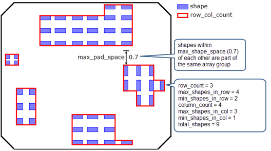

You can find
the number of rows and columns in an array of shapes using a DFM
Property operation. The values are attached to the output layer
as DFM properties. The number of shapes in each row and column is
also determined.
The shapes in the array are assumed to be Manhattan shapes. If
they are not, you can use the following derivation on the extent
of each shape in the array. This derivation does not check for uniform
shape size or spacing.
Try It!
 |
Calibre Advanced DRC (eqDRC) Tutorial and Example Kit
Go to this page on Support Center
to download the complete eKit.
This example is in the miscellaneous_checks/array_counts example directory.
|
Procedure
- Define the following variables
for the maximum length of a shape in an array and the maximum space
between two shapes in the same array:
VARIABLE max_shape_len 0.6 // max edge length of a shape
VARIABLE max_shape_space 0.7 // max space between two shapes
// in the same group
- Derive a layer containing
all shape edges that are shorter than max_shape_len.
LAYER shape 0
shape_edges = LENGTH shape < max_shape_len
Note: The shape layer can be used instead of shape_edges in the
following derivation if it is not necessary to filter shapes by
edge length.
- Construct
a macro that returns the spaces between edges or polygons in a row
or column. The macro uses DFM Space with BY EXT and HORIZONTAL or
VERTICAL to get edge pairs in a row or column. DFM Copy with the
REGION keyword generates polygons from the edge pairs.
// Macro to return spaces in a row or column
// "direction" is HORIZONTAL for spaces in a row,
// or VERTICAL for a column
// "dist" is the max distance for shapes in the same row or column
DMACRO SPACES "in" "dist" "direction" "out" {
edge_pairs = DFM SPACE "in" < "dist" BY EXT "direction"
"out" = DFM COPY edge_pairs REGION
}
- Find rows and columns of shapes
and attach the shape count to the output layer. Shapes within the
max_shape_space distance form a row or column.
Use the SPACES macro to
get the spaces between shapes in a row. Use DFM Copy to combine
the shapes and spaces into a row. Use DFM Property to count the
number of shapes in each row.
CMACRO SPACES shape_edges max_shape_space HORIZONTAL row_spaces
rows = DFM COPY shape row_spaces
rows_prop = DFM PROPERTY rows shape
[shape_count = COUNT(shape)]
Do the same for columns.
CMACRO SPACES shape_edges max_shape_space VERTICAL col_spaces
col = DFM COPY shape col_spaces
col_prop = DFM PROPERTY col shape
[shape_count = COUNT(shape)]
- Group together all rows and
columns that are within the max_shape_space distance of each other.
// get spaces between each row
CMACRO SPACES rows max_shape_space VERTICAL row_vert_spaces
// get spaces between each column
CMACRO SPACES col max_shape_space HORIZONTAL col_horiz_spaces
// combine rows, columns, and the spaces between them
group_all = DFM COPY rows col row_vert_spaces col_horiz_spaces
The group_all layer overlaps each array of shapes.
- Use DFM Property to find the
row and column count for each array of shapes. The minimum and maximum
number of shapes in each row and column is also calculated, along
with the total number of shapes in the array.
row_col_count = DFM PROPERTY group_all rows_prop col_prop OVERLAP
[row_count = COUNT(rows_prop)]
[column_count = COUNT(col_prop)]
[min_shapes_in_row = MIN(PROPERTY(rows_prop, shape_count))]
[max_shapes_in_row = MAX(PROPERTY(rows_prop, shape_count))]
[min_shapes_in_col = MIN(PROPERTY(col_prop, shape_count))]
[max_shapes_in_col = MAX(PROPERTY(col_prop, shape_count))]
[total_shapes = SUM(PROPERTY(col_prop, shape_count))]
Although not done in this example, any of the property values
can be used to create an filter condition.
- Output the results to an RDB
for viewing.
row_col_count {
DFM RDB row_col_count eqdrc.rdb CHECKNAME "%_l_"
CELL SPACE ALL CELLS
COMMENT "Counts of rows and columns in each group, "
COMMENT "with min, max, and total counts."
}
Results
The following image demonstrates the results for a layout with
several different arrays.
Figure 1. Finding
Row and Column Counts